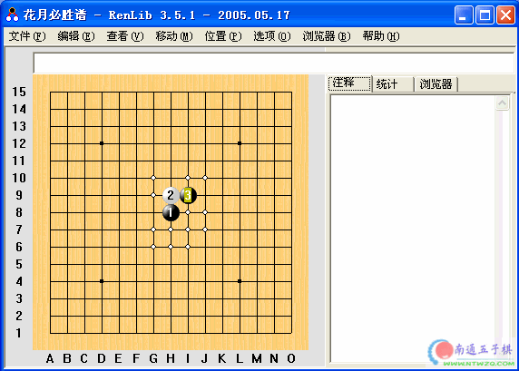

花月必胜谱
#1 花月必胜谱 作者：有志青年 发表时间：2006-5-28 15:57:56

 花月必胜谱.rar
花月必胜谱.rar#2 Re:花月必胜谱 作者：guyan 发表时间：2006-9-16 21:32:38
我要学习#3 Re:花月必胜谱 作者：小海龟 发表时间：2006-10-26 2:53:56
学习!#4 Re:花月必胜谱 作者：cjh199 发表时间：2006-11-13 20:49:01
xuexi#5 Re:花月必胜谱 作者：jzxjzx 发表时间：2006-12-16 11:27:43
真的？#6 Re:花月必胜谱 作者：free 发表时间：2006-12-17 18:19:57
来看看谢谢分享
#7 Re:花月必胜谱 作者：friend 发表时间：2006-12-28 15:06:21
回复一下
#8 Re:花月必胜谱 作者：lxlzwd 发表时间：2008-1-14 0:05:21
哈哈 好 喜欢#9 Re:花月必胜谱 作者：心心手 发表时间：2008-1-25 23:08:08
好东西,谢谢#10 Re:花月必胜谱 作者：旅行者 发表时间：2008-6-13 0:50:24
学习了，谢谢LZ，辛苦了#11 Re:花月必胜谱 作者：卡西莫多 发表时间：2008-6-19 19:50:58
不懂呀不知道怎么看呀.#12 Re:花月必胜谱 作者：晏如庐 发表时间：2008-7-2 8:37:20
下载后不知如何打开#13 Re:花月必胜谱 作者：只求安心 发表时间：2008-8-6 16:12:00
不会看啊，怎么看?
#14 Re:花月必胜谱 作者：石磊 发表时间：2008-9-1 20:47:48
不全,
#15 Re:花月必胜谱 作者：旖旎阳光 发表时间：2009-1-7 16:22:24
谢谢，收藏了
#16 Re:花月必胜谱 作者：尘香花已尽 发表时间：2009-2-3 20:49:21
学习！！！！！#17 Re:花月必胜谱 作者：尘香花已尽 发表时间：2009-2-3 21:05:25
学习！！！！！！！！！！#18 Re:花月必胜谱 作者：爱的罗曼司 发表时间：2009-2-4 16:00:15
怎么用不了呵？互动棋谱
#19 Re:花月必胜谱 作者：最爱绿茶 发表时间：2009-11-9 13:34:44
谢谢，学习了！
#20 Re:花月必胜谱 作者：一殲 发表时间：2009-11-20 12:05:02
學習#21 Re:花月必胜谱 作者：田青华 发表时间：2009-12-23 20:19:52
5588888888888#22 Re:花月必胜谱 作者：与狼共舞啊 发表时间：2009-12-25 23:42:26
很好用阿，谢谢莲子
#23 Re:花月必胜谱 作者：选择忘记 发表时间：2009-12-28 0:36:27
ding```#24 Re:花月必胜谱 作者：小兆子 发表时间：2010-1-4 0:12:53
怎用
#25 Re:花月必胜谱 作者：超级五子菜鸟 发表时间：2010-3-27 16:15:15
用RenLib 3.7打开后不知道怎么看？棋谱是提示必胜怎么下吗？#26 Re:花月必胜谱 作者：只需十步 发表时间：2010-3-29 11:51:28
这东西 lib格式的 要怎么观看呀#27 Re:花月必胜谱 作者：老滑 发表时间：2010-4-29 22:34:23
好东西，不过怎么用啊#28 Re:花月必胜谱 作者：小小九 发表时间：2010-6-1 11:10:51
怎么打开呀
#29 Re:花月必胜谱 作者：嗯嗯嗯嗯嗯嗯嗯嗯 发表时间：2010-6-2 16:52:51
这个文件怎么打开啊 ？#30 Re:花月必胜谱 作者：活着就是简单 发表时间：2010-6-6 18:14:21
新手 学习一下 谢谢#31 Re:花月必胜谱 作者：刘明哲 发表时间：2010-6-6 23:14:25
怎么看?w#32 Re:花月必胜谱 作者：不求闻达 发表时间：2010-6-8 15:58:22
谢谢楼主分享，下来学习下。#33 Re:花月必胜谱 作者：龙小小 发表时间：2010-6-8 21:34:42

#34 Re:花月必胜谱 作者：天涯游子 发表时间：2010-6-24 21:18:34
SEE 4 IN 6 是什么意思?
#35 Re:花月必胜谱 作者：菜鸟欲飞 发表时间：2010-8-29 21:13:04
～～～～～～～～～～～～～～·
#36 Re:花月必胜谱 作者：华硕 发表时间：2011-1-31 23:05:50
谢谢楼主提供，学习了